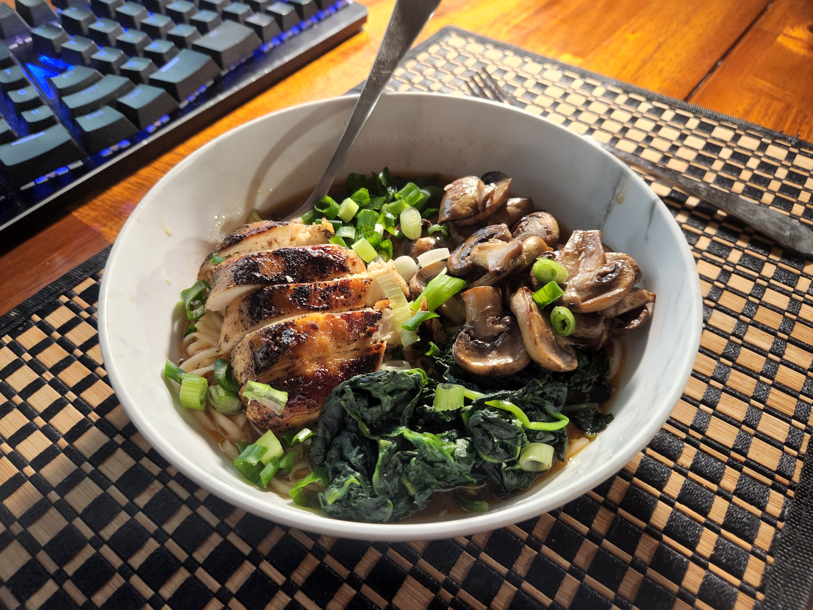
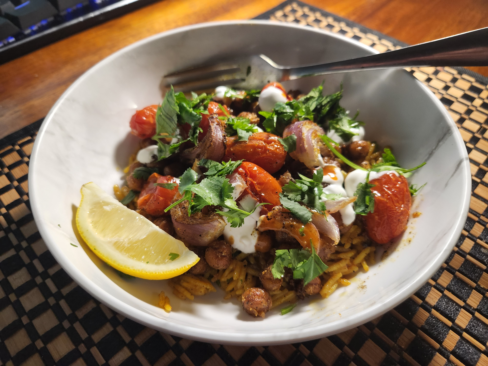
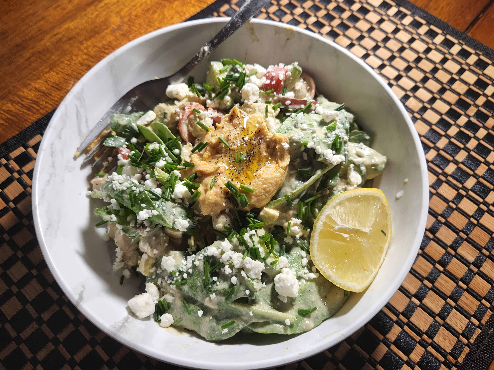
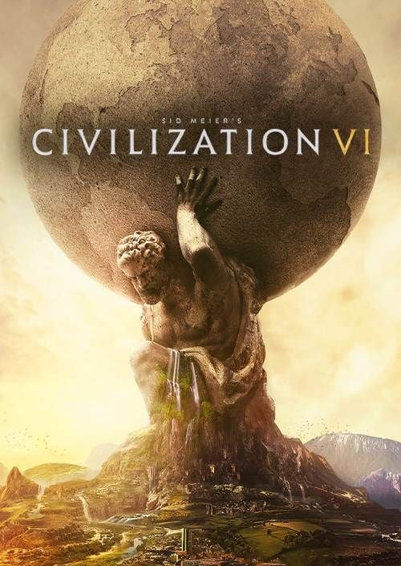

Hi, I'm Mikhail
Just a guy who isn't great at at dating apps but has does have some web design skills.
A Few Photos of Me


Quick Facts
-
May 4th, 2001
- LocationQueensbury, NY
- OccupationSoftware Engineer ↓
-
Walla Walla University
-
6 feet with shoes
-
100% Russian, born in Tula and lived in Yekaterinburg till 7 before moving to the US
- MBTIINTJ
-
Seventh-Day Adventist
My Story
I was born in Tula, Russia, grew up in Yekaterinburg until I was 7, and then moved to the US, where I've been ever since. I found programming in 11th grade and it just clicked for me. I loved problem solving and building things since I was a child, and software let me build things instantly instead of waiting on a physical product. That turned into a computer engineering degree from Walla Walla University and now a software engineering job at the NY Comptroller's Office, which I'm still fairly new to but already appreciate for the work-life balance.
I might start as "nonchalant" but once I do get into something, I become obsessed over it. and that is basically the theme of my life. When something grabs me, I go all in, whether that is competitive Civ 6 or ruining my sleep schedule by reading a new book till 4am. My faith is a core foundation of how I see the world and what I'm looking for in a relationship, which is also why, instead of swiping on dating apps (turns out I'm not great at those), I built this website instead.
How Friends Would Describe Me
The Optimist
I genuinely see the best in people and situations, usually assuming something was done with good intentions.
The Planner
I like planning, scheduling and in general have a structured approach to life. Before most decisions I usually take some time to try to fully understand the scope and situation of the problem at hand.
Obsessive
When I really get into something, I truly go all in. I truly take the time to go much further than just the normal above and beyond.
What I Do
I am a software engineer, currently working for the new york comptrollers office. I just started but it pays decently well and has a great emphesis on real work life balance. I have loved programming since discovering it in 11th grade. I have always loved problem solving and more specifically building things so engineering was always on my mind. However, my particular interest in software engineering came from the fact that I could build things instantaneously rather than have to wait for a physical product to be built.
Interests & Hobbies
I didn't care too much for reading when I was younger, and then I read Prince Capsian from the Chronicles of Narnia series in 4th gradeand have been an avid reader since. I experienced a second revolution around the age of 14 when I discovered light novels, and later Chinese web novels. Since then, I read on average probably around 3-4 hours a day, sometimes a lot more if I am just starting a new book.
Mikhail's Masterpieces Some novels that I consider to be the peak of eastern literature. →I love food, and by extension love cooking when I have the opportunity. Sounds a bit basic but my signature dish is a garlic heavy tomato soup. I can also make pasta at resteurant quality, though I don't enjoy pasta too often myself. Regarding food in general, I generally like spicy food, though the spiciest I can go is the buldak chicken ramen. My favorite cuisine is Russian, but a close second is Greek. I am mostly a vegetarian myself with the exception of chicken, but I do occasionally eat Beef, Lamb and Turkey.



Gaming is interesting because it is more of a social tool/activty for me than anything else. Since I was a kid, it was my primary way to connect with people. Thus, it has developed to be an important hobby for me. I primarily enjoy playing startegy games like Civilizations 6, and Crusader Kings 3. Should note/brag that I can be considered a top 100 player in Civilizations 6 in the world, with my team making it to the top 8 in the world championship. I don't play single player games as much but I recently really enjoyed playing Expeditions 33. Finally, for my top 3, Genshin Impact is up there, with me playing it from day 1 and being AR60, though I haven't played it in the last year.



Along with Math, History has always been my favorite subject. I tend to be drawn to ancient history in particular as it is always fascinating to me to learn about how people of the past lived. My study generally includes the whole world the more ancient the period is. However, as we move to the modern times, especially after the medieval era, I tend to focus more on Europe, and more particularly on Russia past the Renaissance. Recently I have also really enjoyed the "Fall of Civilization Podcast" that I would like to recommend.
Fall of Civilizations The podcast/channel I keep recommending to everyone. →